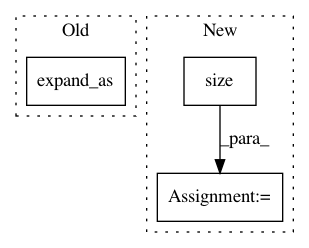

78c3480e3b86b971cc834f1d3cec162408ba1ba0,torchaudio/functional/functional.py,,griffinlim,#Any#Any#Any#Any#Any#Any#Any#Any#Any#Any#,128
Before Change
angles = torch.zeros(batch, freq, frames)
angles = torch.stack([angles.cos(), angles.sin()], dim=-1) \
.to(dtype=specgram.dtype, device=specgram.device)
specgram = specgram.unsqueeze(-1).expand_as(angles)
// And initialize the previous iterate to 0
rebuilt = torch.tensor(0.)
After Change
specgram.size(),
dtype=_get_complex_dtype(specgram.dtype), device=specgram.device)
else:
angles = torch.full(
specgram.size(), 1,
dtype=_get_complex_dtype(specgram.dtype), device=specgram.device)
// And initialize the previous iterate to 0
tprev = torch.tensor(0., dtype=specgram.dtype, device=specgram.device)
for _ in range(n_iter):
In pattern: SUPERPATTERN
Frequency: 3
Non-data size: 3
Instances
Project Name: pytorch/audio
Commit Name: 78c3480e3b86b971cc834f1d3cec162408ba1ba0
Time: 2021-04-09
Author: 855818+mthrok@users.noreply.github.com
File Name: torchaudio/functional/functional.py
Class Name:
Method Name: griffinlim
Project Name: rusty1s/pytorch_geometric
Commit Name: 0ab5b005164cddccbf7c8a3d66ff6707333de80b
Time: 2018-05-07
Author: matthias.fey@tu-dortmund.de
File Name: torch_geometric/utils/matmul.py
Class Name:
Method Name: matmul
Project Name: allenai/allennlp
Commit Name: a2878a883280dc0525b57ae800d7b3c719f6046c
Time: 2017-10-21
Author: mattg@allenai.org
File Name: allennlp/models/encoder_decoders/simple_seq2seq.py
Class Name: SimpleSeq2Seq
Method Name: forward